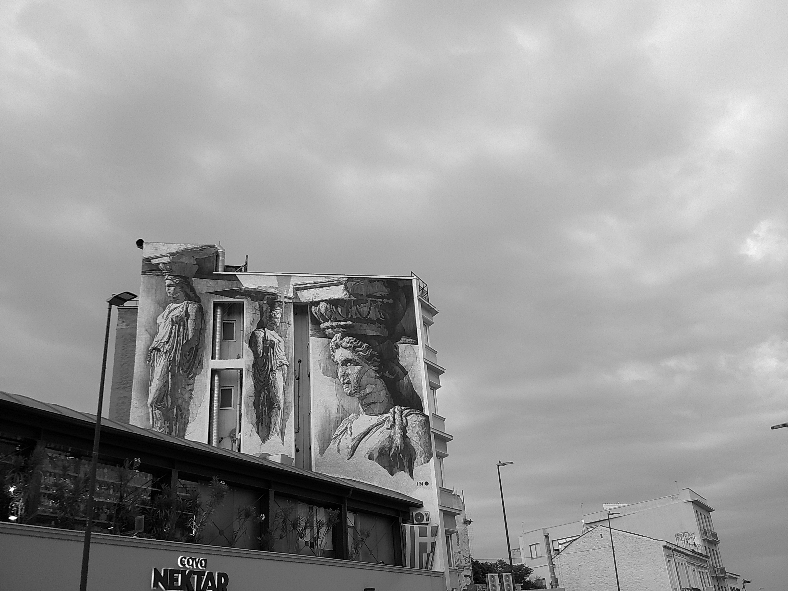
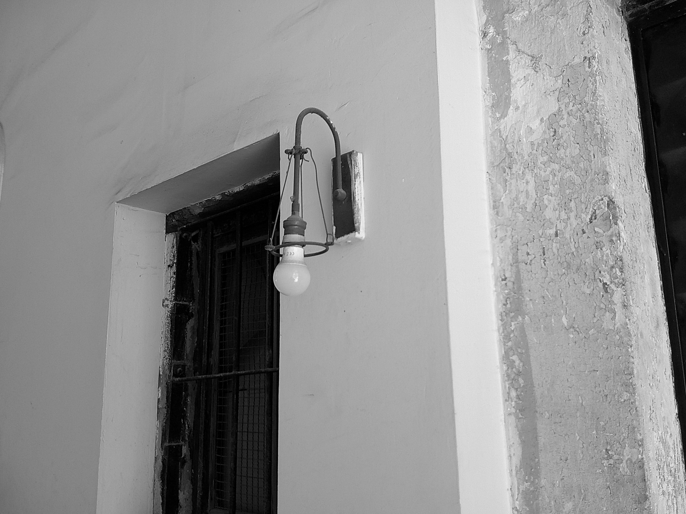
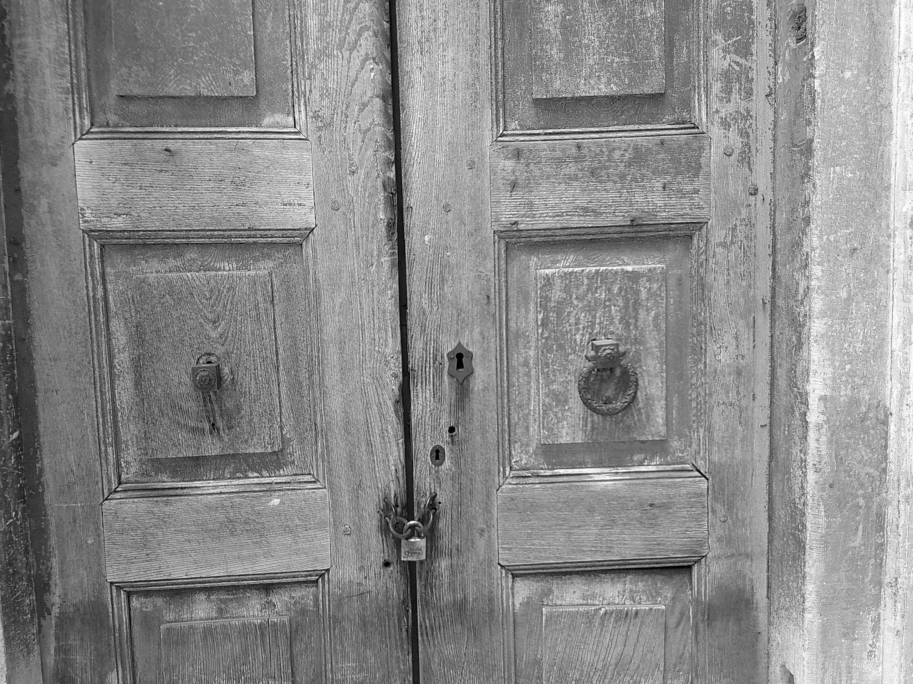
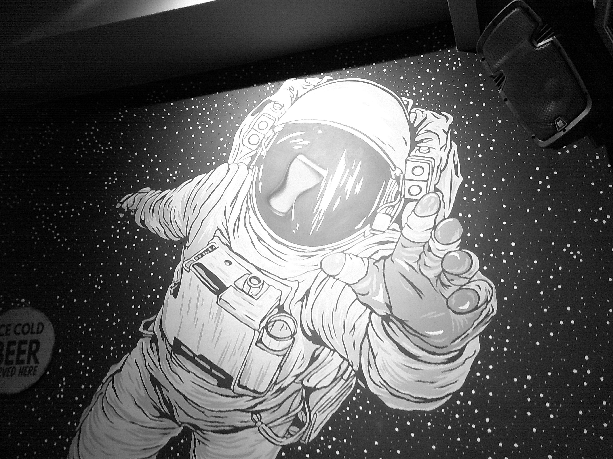
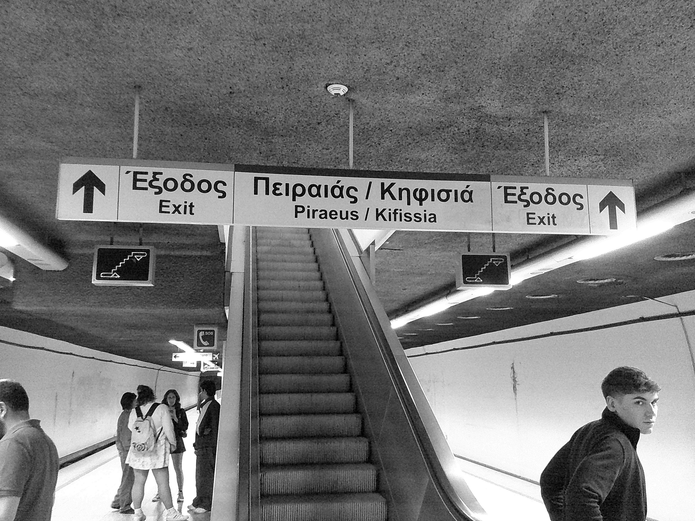
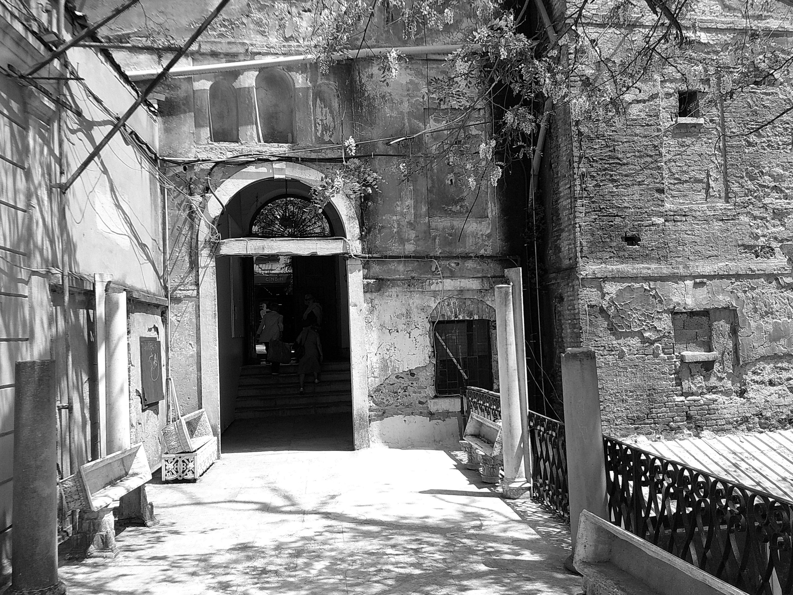

// entry no: 01 — mazunt, shrine fragments.
the archive has begun.
a raw, unpolished space away from the noise. soon, leaks from the viewfinder and fragments of observation will gather here.
// entry no: 01 — mazunt, shrine fragments.

// entry no: 02 — mazunt, athens, may 2026.

// entry no: 03 — mazunt, mystery of light.

// entry no: 04 — mazunt, this is the end my only friend the end.

// entry no: 05 — mazunt, great beers at astro pub.

// entry no: 06 — mazunt, can't decide?.

// entry no: 07 — old town.

// entry no: 08 — mazunt, lunch time.

// entry no: 09 — mazunt, quiet park, full of mulberry trees.